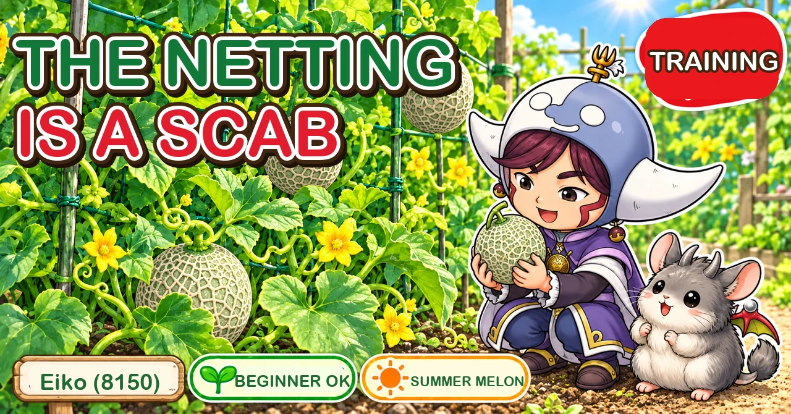
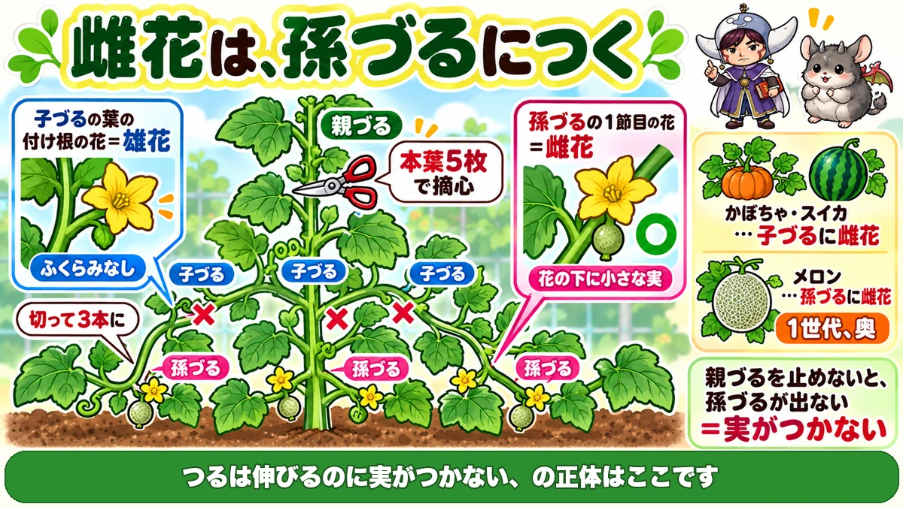
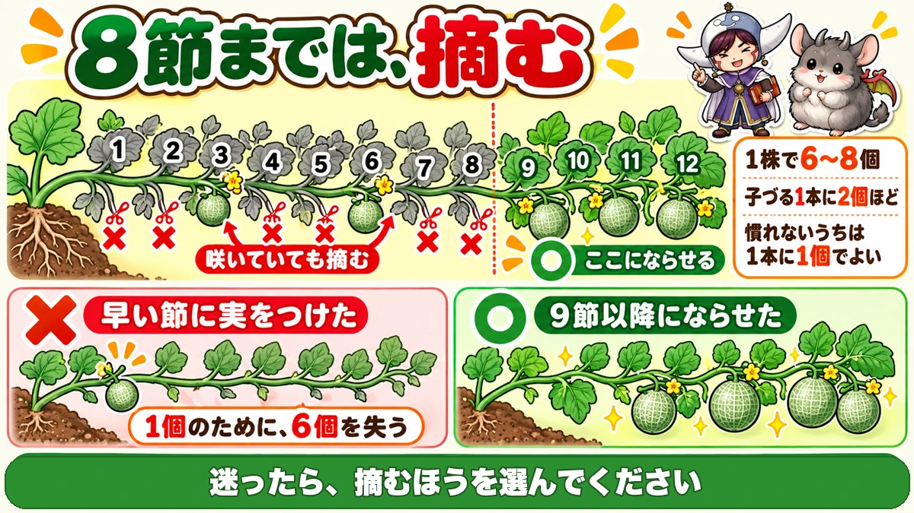
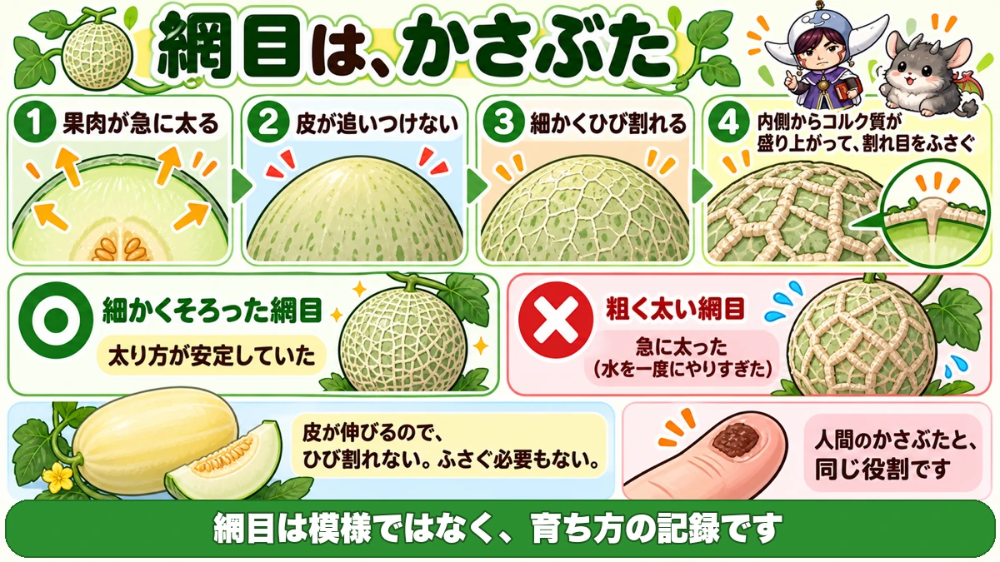

Melon female flowers come on the sub-laterals 🍈 So stop the main vine early

🍈 "The vines grow and nothing sets."
🍈 "I nursed the first fruit and that was the only one I got."
🍈 "Barely any netting formed on the skin."
Hello, I'm Eiko. Eight years of growing vegetables organically and without pesticides, and a teaching licence in science.
Melons are the most particular cucurbit to train. Treat one like a cucumber, squash or watermelon and it won't set fruit.
The headline:
A melon's female flowers come on the sub-laterals.
So you stop the main vine early, to get the sub-laterals out.
Start with a small netted melon rather than a full-sized one — far easier, and it can be grown in a container. This article assumes a small type.
Learn the three generations of vine

What this diagram says （図解の文字）
- Female flowers come on the sub-laterals
- "A flower at a leaf joint on a lateral = male flower" — "no swelling"
- main vine — "pinch at five true leaves"
- laterals ×3 kept, others ✗ — "cut down to three"
- sub-laterals
- Main vine — the single thick vine that grows first from the plant
- Lateral — a vine from a leaf joint on the main vine
- Sub-lateral — a vine from a leaf joint on a lateral
The flowering position differs
- Squash and watermelon — female flowers on the laterals
- Melon — female flowers on the sub-laterals
One generation further out.
Which is why you stop the main vine
To get sub-laterals you need laterals; to get laterals you must stop the main vine.
Pinch the main vine at five true leaves.
Left alone, the main vine simply keeps extending and the sub-laterals never appear. "The vines grow and nothing sets" is, nearly always, exactly this.
Reduce the laterals to three
Four or five will come. Keep three and cut the rest at the base — fewer vines means more strength in each.
Telling the flowers apart
- A flower at a leaf joint on a lateral — male
- A flower at the first node of a sub-lateral — female
A female flower already has a small melon below it — the same as a courgette.
Nothing sets before the ninth node

What this diagram says （図解の文字）
- Remove everything up to the eighth node
- nodes 1–12, with ✗ up to 8 — "remove them even if they're flowering"
- ○ "let it set from here"
- "6–8 per plant" ／ "about two per lateral" ／ "one per lateral while you're learning"
Count the leaves on the lateral
Count the leaves along a lateral from its base: one, two, three…
- Remove the sub-laterals from leaves one to eight
- Let the sub-laterals from the ninth leaf onward carry fruit
Remove them even if they're flowering
This is the hard part. The sub-laterals up to the eighth node may already have female flowers, with tiny melons on them, and you badly want to keep them.
Remove them anyway.
Why
Fruit set while the plant is still small takes all the resources. The result:
- That fruit doesn't grow large either
- And nothing sets after it
You lose six for the sake of one.
The weaker the plant, the stricter
- Exceptionally vigorous plant — a slightly earlier node can be all right
- Ordinary plant, or one running wild — remove strictly to the eighth node
When in doubt, remove.
Six to eight per plant
- 6–8 fruit per plant
- About two per lateral
While you're learning, one per lateral is fine — and it will certainly be sweet.
Hand-pollinate by the pollen, not the clock
"Pollinate before 10 a.m." is common advice. It isn't wrong, but don't watch only the clock.
- A hot morning — pollen is already shedding by six
- An overcast day — it may not start until the afternoon
What matters is whether pollen is shedding, not what time it is. Look inside a male flower and check for powder before you start.
How
- Pick a male flower, strip the petals
- Brush it lightly against the centre of the female flower
Melon flowers are small and this can be fiddly — in which case collect the pollen on a brush and paint it on, as with courgettes.
Feed on the path side
Scatter the feed outside the mulch film, on the path side. The roots have already reached there — fed at the base, it never arrives.
Science bit: the netting is scar tissue 🔬

What this diagram says （図解の文字）
- The netting is a scab
- 1 "the flesh swells rapidly" 2 "the skin can't keep up"
- 3 "it cracks finely" 4 "corky tissue rises from inside and seals the cracks"
- ○ "fine, even netting" — "swelling was steady"
That netting — you probably assume it's a varietal pattern. I did. It isn't.
It's the trace of healed cracks.
- The flesh inside starts swelling rapidly
- The skin can't keep up
- The skin cracks finely
- Corky tissue rises from inside and seals the cracks
Those sealed lines, left in place, are the netting.
In other words, a scab
When we cut ourselves, a scab forms and closes the wound. A melon does the same thing on the surface of its fruit — so a netted melon is covered, head to foot, in scabs.
Why fine netting is a good sign
- Fine, even netting = the swelling was steady
- Coarse, thick lines = it swelled abruptly
The netting is a record of how the fruit grew.
Which is why overwatering shows
Water heavily all at once and the fruit swells suddenly and cracks widely — and sealing a wide crack gives thick, coarse lines.
If you want fine netting, don't increase the water abruptly.
Some melons have no netting
Smooth-skinned melons exist because their skin stretches. It doesn't crack, so there's nothing to seal. Netted or not is a difference in how the skin stretches.
To sum up
- ✅ Start with a small netted melon
- ✅ Learn main vine, lateral and sub-lateral
- ✅ Female flowers come on the sub-laterals (squash and watermelon: laterals)
- ✅ Pinch the main vine at five true leaves
- ✅ Keep three laterals
- ✅ Remove sub-laterals up to the eighth node, flowering or not
- ✅ Set fruit from the ninth node onward
- ✅ 6–8 per plant; one per lateral while learning
- ✅ Pollinate when pollen is shedding, not by the clock
- ✅ Feed outside the film, on the path side
- ✅ The netting is healed cracking — fine netting means steady growth
- ✅ Don't increase water abruptly
You don't have to do all of it. Pinch the main vine at five true leaves. Get that one thing right and the rest will follow 🍈
Thank you for reading!